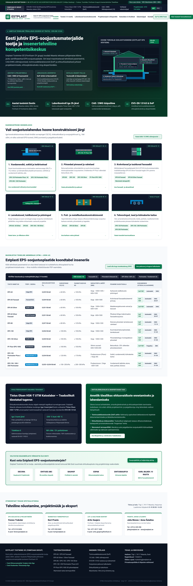
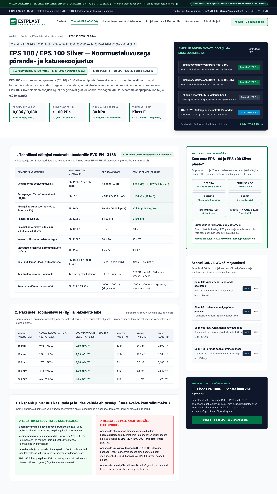
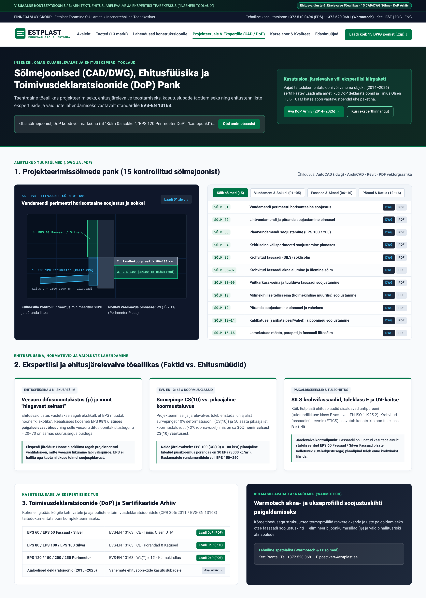

Põhjalik visuaalse identiteedi, infoarhitektuuri, mobiilse kasutajakogemuse (UX), otsingumootorite nähtavuse (SEO), tehisintellekti otsingu (GEO) ja küberturvalisuse audit koos 3 täispika visuaalse mockup-kontseptsiooniga.
Estplast on alates 2004. a Eesti juhtiv EPS-soojustuse tootja. 2019. a veebileht ei peegelda kontserni tegelikku mastaapi ega Tinius Olsen katselabori taset.
Müük toimub läbi jaekettide (Decora, Ehituse ABC, Bauhof, Espak jt). Veebileht peab olema inseneri, arhitekti, järelevalve ja ekspertiisi töölaud.
PDF-raamidesse peidetud parameetrid tuleb asendada HTML-andmetabelite, DWG-sõlmede panga, DoP-arhiivi ja Schema.org struktuuriga.
Estplast Tootmine OÜ on üle 20-aastase ajalooga Eesti ehitusmaterjalitööstuse nurgakivi ja Soome Finnfoam OY grupi liige. Ettevõttel on Maardus tipptasemel tootmine ja Eestis unikaalne Tinius Olsen H5K-T UTM katselabor. Praegune, 2019. aastal ehitatud veebileht (Elementor v2.5.4) kahjustab aga otseselt turuliidri kuvandit ning peidab väärtuslikud insenertehnilised andmed mobiilis mittetöötavatesse PDF-akendesse.
| Auditeeritud valdkond | Praegune skoor | Sihttase (Uus) | Peamised tuvastatud puudused estplast.ee lehel |
|---|---|---|---|
| 1. Visuaalne disain & korporatiivne bränd | 3,5 / 10 | 9,5 / 10 | Udune logo.gif, 3 dubleeritud menüüd korraga ekraanil, couple.png taustahäkk, kokkusurutud nupud ja katkine "Vundamendid" kaart (href="#"). |
| 2. Struktuur, UX & mobiilivaade objektil | 4,5 / 10 | 9,5 / 10 | Kõik 13 tootelehte kasutavad <object type="application/pdf"> akent, mis nutitelefonis (iOS/Android) ei avane. Keelevahetus viskab alati avalehele; ENG vaade puudub. |
| 3. Tehniline ja sisuline SEO (Google) | 3,0 / 10 | 9,5 / 10 | Kõigil lehtedel on <html lang="en-US">, 0 <h1> pealkirja, 0 meta-kirjeldust ning wp-sitemap.xml indekseerib 31 sisemist Elementori malli. |
| 4. GEO (Nähtavus AI-assistentides) | 3,5 / 10 | 9,5 / 10 | Tehnilised näitajad (λD, CS(10), paksused) on lukustatud PDF-failidesse. Puuduvad HTML-andmetabelid, Product JSON-LD Schema ja /llms.txt. |
| 5. Tehnoloogia ja küberturvalisus | 4,0 / 10 | 9,5 / 10 | 7 a vana Elementor (v2.5.4), avalik admin-konto leke (/wp-json/wp/v2/users → andrei@surflink.ee), 6x menüü DOM-is, puudub GDPR küpsiste bänner. |
Ehitusmaterjalide suurtootjana ei konkureeri Estplast oma edasimüüjatega (Decora, Ehituse ABC, Bauhof, Espak, Ehituskaup24), vaid loob nõudluse läbi projekteerimisfaasi ja tehnilise autoriteedi. Kui arhitekt kirjutab projekti sisse Estplasti sõlmejoonise (DWG 01–16) ja täpse tootekoodi (nt EPS 120 Perimeeter Pluss või EPS 60 Silver Fassaad) ning ehitusjärelevalve ja ekspertiis kasutavad Estplast.ee lehte ametliku normatiivse tõeallikana, küsib ehitaja ehituskauplusest just Estplasti toodangut.
Kodulehe esmamulje luuakse 0,05 sekundiga. Praegune estplast.ee kujundus pärineb 2019. aasta märtsist ja sisaldab mitmeid visuaalseid ning koodilisi defekte, mis jätavad Eesti juhtivast EPS-tootjast ja Põhjamaade Finnfoam OY kontserni liikmest aegunud mulje.
Päises kasutatakse madala resolutsiooniga GIF-formaadis logo (/2019/03/logo.gif), millel puudub teravus kaasaegsetel ekraanidel. Samal ajal kuvatakse külastajale 3 erinevat menüüd korraga: ülemine horisontaalne menüü, vasak külgmenüü ja alumine horisontaalne rida, kus samad lingid (Mis on EPS?, Kasutamine) korduvad.
Avalehe keskne visuaalne plokk koosneb 6 konstruktsioonikaardist. Kõige esimene ja äriliselt kriitilisem kaart — "Vundamendid" — on seotud tühja ankruga href="#". Kui projekteerija või tellija sellel klikib, ei juhtu mitte midagi (ehkki leht /est/kasutamine/vundamendid/ on serveris tegelikult olemas!).
Failis post-144.css on vasaku veeru taustaks määratud background-image: url(".../2019/03/couple.png"); padding: 0px 0px 250px 0px;. Selline jäik polsterdus tekitab erinevatel ekraanisuurustel tühja valget ruumi ja lõhub lehe geomeetrilise rütmi.
Et mahutada pikki eestikeelseid ja venekeelseid nimetusi kitsastesse nuppudesse, on CSS-is kasutatud negatiivset tähevahet (letter-spacing: -0.9px). Tulemuseks on raskesti loetav, kokkusurutud tekst, mis mõjub odavalt.
Estplast ei vaja e-poodi ega ostukorvi nuppe, mis tekitaksid kanali-konflikti edasimüüjatega. Selle asemel peab uus disain kandma kahte selget sõnumit:
| Kujunduselement | Praegune olukord (2019. a veebileht) | Uus Korporatiivne Visioon (Mockup 1–3) |
|---|---|---|
| Brändi positsioneering päises ja Hero-plokis | Üldsõnaline tekst, udune logo.gif, Finnfoam OY kontserni kuuluvus on peidetud teksti sisse. |
Terav SVG vektorlogo, selge FINNFOAM OY GROUP kvaliteedimärk, fookus: "Eesti juhtiv EPS-tootja ja insenertehniline kompetentsikeskus alates 2004". |
| Kvaliteedi ja labori visualiseerimine | Unikaalne Tinius Olsen H5K-T UTM katseseade on mainitud vaid ühes pikas tekstilõigus lehel "Mis on EPS?". | Esile tõstetud usaldusplokk avalehel ja tootelehtedel: kontroll iga 2h järel, EVS-EN 13163 vastavus, CE-märgis, tuleklass E. |
| Suunamine ostjale (Tootja vs. E-pood) | Lehel "Edasimüüjad" on vaid tekstipõhine nimekiri kauplustest ilma visuaalse sidususeta tootelehtedel. | Igal tootelehel ja avalehel on selge plokk: "Kust osta?" → Decora, Ehituse ABC, Bauhof, Espak, Ehituskaup24, K-Rauta + projektimüügi otsekontakt. |
| Navigatsioon ja ruumikasutus | 3 dubleeritud menüüd võtavad ~35% ekraanipinnast; kitsas sisuveerg. | 1 ühtne ja puhas päis, laiekraani (1440px) insenertehniline paigutus koos 3D/CAD ristlõikejoonistega. |
Kui projekteerija, korteriühistu juhatus või riigihanke komisjon võrdleb isolatsioonitootjaid, seostatakse korrastatud, tehniliselt täpset ja kaasaegset veebikeskkonda otseselt tootmise täpsuse ja tarnekindlusega. Puhas Põhjamaade tööstusdisain (Estplasti roheline #007548 kombineeritud tehnilise tumehalli #0f172a ja selgete joonistega) viib Estplasti digitaalse kuvandi koheselt samale tasemele emafirma Finnfoam OY ja rahvusvaheliste börsikontsernidega.
Estplasti veebilehe külastajad ei otsi meelelahutust — nad otsivad täpset tehnilist vastust konkreetsele ehituslikule probleemile. Praegune lehe struktuur sunnib spetsialisti ekslema kolme menüü vahel ning blokeerib mobiilikasutajate ligipääsu tooteandmetele.
Kõikidel Estplasti tootelehtedel (/est/tooted/eps60/ kuni /est/tooted/eps250perimeeter/) puudub HTML-tekstina esitatud tehniline info. Selle asemel on lehele manustatud PDF-fail koodiga:
<object data="/pdf/EPS 60.pdf?rand=9255#toolbar=0&navpanes=0" type="application/pdf" width="100%" height="1130px">
Tagajärg ehitusplatsil: Nutitelefonide brauserid (iOS Safari ja Android Chrome) ei renderda <object> PDF-raame, vaid kuvavad ingliskeelse veateate "Oops! Your browser doesn't support PDFs! Download the PDF to view it." Ehitusjärelevalve insener või töödejuhataja peab objektil seistes alla laadima eraldi PDF-faile lihtsalt selleks, et kontrollida plaadi survepinget või paksuste tabelit.
Uuel platvormil jõuab iga sihtrühm vajaliku infoni otse avalehelt või ühtsest päisest maksimaalselt 1–2 klikiga:
Estplastil on olemas 15 professionaalset DWG ja PDF sõlmejoonist (alates 01 Vundamendi perimeetri horisontaalne soojustus kuni 16 Lamekatusega hoone parapeti soojustamine), kuid praegu on need peidetud tekstilinkidena lehele /est/juhendmaterjalid/. Uues vaates (Mockup 3) on need filtreeritavad konstruktsiooni järgi koos visuaalse CAD-eelvaatega ja seotud otse vastavate tootelehtedega.
Ehitusvaidluste, ekspertiiside ja kasutuslubade vormistamisel on vaja ühest allikat: EVS-EN 13163 normid, kehtivad ja ajaloolised DoP deklaratsioonid, veeauru difusioonitakistuse (μ) faktid ning selged piirangud (nt miks tavalist EPS 100 ei tohi panna märga pinnasesse EPS 120 Perimeeter Pluss asemel).
Iga tooteleht (Mockup 2) kuvab HTML-tabelina paksused (25–200 mm), soojapidavuse RD (m²K/W), plaatide arvu pakis ning m²/m³ mahud, lisaks paigaldus- ja ladustamisnõuded (nt EPS Silver kaitsmine otsese päikesekiirguse eest).
Praegune keelevahetaja suunab kasutaja alati avalehele (/rus/avaleht/) ning inglise keel puudub täielikult (ehkki koodis on peidetud Läti ja Leedu menüümallid). Uus platvorm seob keelevahetuse täpse alamlehega ja toob nähtavale võtmeisikud (Ferenc Traksler, Kert Prants, Artis Gaujers).
| Struktuurne probleem praegu | Tehniline leid estplast.ee lehel | Lahendus uuel platvormil |
|---|---|---|
| Juurkausta ja /est/ konflikt | Avaleht on https://estplast.ee/, kuid sisulehed on /est/... all; menüüs viitab "Avaleht" dubleerivale URL-ile. |
Ühtne URL-struktuur (/et/, /ru/, /en/) koos korrektsete hreflang ja kanooniliste viidetega. |
| Peidetud erilahendused (FF-Floor & Warmotech) | FF-Floor EPS 100S (-25% betoonikulu) ja Warmotech termoprofiilid on peidetud või raskesti leitavad. |
Tõstetud esile nii tootekataloogis, põranda/fassaadi sõlmedes kui ka inseneri töölaua vaates. |
Kui projekteerija, ehitusjärelevalve või hankejuht otsib Google'ist või küsib tehisintellektilt (ChatGPT, Perplexity, Google AI) Eesti EPS-soojustusplaatide parameetreid, jääb estplast.ee nähtamatuks nelja fundamentaalse koodivea tõttu.
| SEO / GEO Koodiviga | Tõend praegusest lähtekoodist | Mõju otsingunähtavusele ja lahendus |
|---|---|---|
| 1. Vale keele atribuut kõigil lehtedel | Kõik eestikeelsed ja venekeelsed lehed algavad koodiga:<html lang="en-US"> |
Google ja AI-indekseerijad tõlgendavad lehte ingliskeelse lehena, millel on vale keeleline sisu. Lahendus: lang="et", lang="ru", lang="en" + hreflang. |
2. Täielik <h1> ja meta-kirjelduste puudumine |
Avalehel ja sisulehtedel on 0 <h1> pealkirja ning 0 <meta name="description"> märgendit. |
Otsingumootoril puudub lehe peateema signaal; Google kuvab otsingutulemustes juhuslikke menüütekste. Lahendus: Unikaalne <h1> ja meta-kirjeldus igale lehele. |
| 3. Sisemiste mallide leke XML-sisukaardis | wp-sitemap-posts-elementor_library-1.xml sisaldab 31 tehnilist malli (nt ?elementor_library=logo, nav-left-lat, nav-lit). |
Google raiskab indekseerimiseelarvet poolikutele menüüribadele ja logodele ("indeksipaisumine"). Lahendus: Eemaldada elementor_library ja users sisukaardist (noindex). |
| 4. Andmete lukustamine PDF-failidesse | Tootelehed sisaldavad vaid <object data="/pdf/EPS 100.pdf"> ilma HTML-tekstita. |
HTML-lehel on ~0 sõna tehnilist sisu. Lahendus: Semantilised HTML5 andmetabelid (λD, CS(10), BS, RD) otse tootelehel + PDF allalaadimiseks. |
Insenerid, arhitektid ja ehituseksperdid kasutavad üha enam AI-assistente küsimusteks nagu: "Millist EPS plaati kasutada vundamendi taldmiku all Eestis?", "Mis vahe on Estplast EPS 60 Fassaad ja EPS 60 Silver Fassaad plaatidel?" või "Milline on EPS 100 pikaajaline koormustaluvus?". Et AI tsiteeriks Estplasti kui ametlikku tõeallikat, rakendame uuel lehel 4 tehnilist standardit:
<table> struktuuri koos standardi EVS-EN 13163 koodide, λD, CS(10), WL(T) ja RD väärtustega.
ManufacturingBusiness (Finnfoam OY parentOrganization) ja Product märgendus koos additionalProperty tehniliste parameetritega.
https://estplast.ee/llms.txt, mis annab keelemudelitele täpse ülevaate Estplasti tooteportfellist, DoP linkidest ja edasimüüjatest.
Kui iga tooteleht ja konstruktsioonisõlm on varustatud semantilise HTML-i ja struktureeritud andmetega, hakkab estplast.ee ilmuma nr 1 positsioonil kõigi Eesti soojustus- ja ehitusfüüsika märksõnadega — suunates seejärel ostja otse Decora, Ehituse ABC, Bauhofi, Espaki või Ehituskaup24 kauplustesse.
Kuigi WordPressi tuum on uuendatud versioonile 6.6.11, pärineb veebilehe ehituskiht 2019. aastast ning sisaldab turva- ja jõudlusriske, mis vajavad kohest tähelepanu.
Kasutusel on 2019. aasta Elementor koos aegunud teekidega (Font Awesome 4.7.0, vana Swiper ja imagesloaded). Nii vanad pistikprogrammid sisaldavad teadaolevaid XSS-haavatavusi ja piiravad PHP uuendamist.
Päring /wp-json/wp/v2/users ja fail wp-sitemap-users-1.xml paljastavad avalikult administraatori konto ID 1 (andrei@surflink.ee, slug: andreisurflink-ee), mis soodustab parooliründeid.
Iga lehe laadimisel saadetakse brauserisse 6 täielikku menüüpuud (3 nähtavat + 3 dubleeritud mobiilimenüüd), mis paisutab HTML DOM-i mahtu.
Leht laeb Google Analytics 4 skripti (G-XLWRKJVW4L) kohe ilma kasutaja nõusolekuta ja privaatsustingimuste viiteta.
| Etapp & Ajakava | Fookus ja Eesmärk | Konkreetsed tegevused ja tulemid |
|---|---|---|
|
I ETAPP Nädalad 1–2 (Kiired parandused) |
Kriitiliste vigade, katkiste linkide ja turvalekete sulgemine |
• Parandada avalehe "Vundamendid" kaardi link (href="#" → /est/kasutamine/vundamendid/).• Muuta <html lang="en-US"> vastavalt keelele (et / ru) ja lisada igale lehele unikaalne <h1> ning meta description.• Eemaldada elementor_library (31 malli) ja users XML-sisukaardist; sulgeda /wp-json/wp/v2/users.• Asendada udune logo.gif terava SVG vektorlogoga ja koondada 3 menüüd üheks puhtaks päiseks.
|
|
II ETAPP Nädalad 3–6 (Kuvand & Tooted) |
Uus Korporatiivne Avaleht (Mockup 1) ja HTML Tootelehed (Mockup 2) |
• Avalehe uuendamine Põhjamaade tööstusdisaini tasemele (Finnfoam OY grupp, Tinius Olsen H5K-T UTM katselabori esiletõstmine, interaktiivne hoone soojustusskeem). • Kõigi 13 EPS toote + FF-Floor EPS 100S lehtedel <object> PDF-akende asendamine mobiilisõbralike HTML5 andmetabelitega (λD, CS(10), BS, paksused, RD, pakenditabel m²/m³) + DoP otseallalaadimine.• Igal tootelehel plokk "Lubatud vs. Keelatud kasutus" ja selge suunamine edasimüüjatele (Decora, Ehituse ABC, Bauhof, Espak, Ehituskaup24). |
|
III ETAPP Nädalad 7–10 (Eksperdiplatvorm & GEO) |
Inseneri Töölaud, Ekspertiisikeskus (Mockup 3) ja AI-otsingu (GEO) liidripositsioon |
• Luua otsitav ja filtreeritav 15 CAD / DWG sõlmejooniste pank koos visuaalse eelvaatega. • Luua Ehitusjärelevalve ja Ekspertiisi Teabekeskus: kehtivate ja ajalooliste Toimivusdeklaratsioonide (DoP) arhiiv kasutuslubadele, ehitusfüüsika (μ-väärtus, niiskusrežiim, tuleohutus) ja Warmotech sõlmed. • Rakendada ManufacturingBusiness, Product ja FAQPage JSON-LD Schema, /llms.txt ning täielik ingliskeelne (ENG) vaade.
|

Esimene mockup näitab, kuidas muuta avaleht puhtaks, Põhjamaade tööstusstandardile vastavaks esindusleheks, mis teenindab korraga projekteerijat, järelevalvet ja ehitajat.
Kolme dubleeritud menüü asemel on 1 selge navigatsiooniriba, Finnfoam OY kontserni märgis, DoP/DWG kiirviited ja nutikas EST | РУС | ENG keelevahetaja.
Selge <h1> sõnumiga, 3 rollipõhise kiirkaardiga (Arhitektile, Järelevalvele/Eksperdile, Ehitajale) ja interaktiivse hoone ristlõikejoonisega.
Parandatud vundamendi kaart + 5 teist konstruktsiooniosa koos soovitatud EPS-markide (CS(10) 60–250 kPa) ja seotud DWG-sõlmede numbritega.
Insener näeb koheselt kõigi 13 EPS-margi + FF-Floor EPS 100S soojusjuhtivust λD, survepinget ja saab 1 klikiga alla laadida DoP PDF-i või DWG-joonise.
Tõstab esile iga 2h tagant tehtava tugevuskontrolli ning suunab ostja selgelt volitatud jaekettidesse (Decora, Ehituse ABC, Bauhof, Espak, Ehituskaup24) ja projektimüügi kontaktidele.

Teine mockup lahendab praeguse veebilehe suurima tehnilise probleemi (<object> PDF-id) ning teeb tootelehest 100% nutitelefoni-, Google'i- ja AI-sõbraliku teabelehe.
Ülaosas on kohe nähtav ametlik standardikood, <h1> pealkiri, võrdluslülitus (EPS 100 Valge vs. EPS 100 Silver Grafiit +20%) ja 4 põhinäitajat (λD, CS(10), pikaajaline koormus 30 kPa, tuleklass E).
Paremal ülal on otselingid Toimivusdeklaratsiooni (DoP PDF), tehnilise tootelehe ja seotud DWG sõlmejooniste allalaadimiseks — sobib otse ehitusjärelevalve täitedokumentatsiooni.
Kõik näitajad ja paksused (25–200 mm koos RD ja m²/m³ pakiandmetega) on puhtas HTML-is — avaneb nutitelefonis ehitusplatsil hetkega ja indekseerub Google'is ning AI-otsingus.
Eksperdiplokk hoiatab selgelt vale kasutuse eest (nt miks märjas pinnases tuleb kasutada EPS 120 Perimeeter Pluss plaati ja krohvifassaadil EPS 60 Fassaad plaati).
Küljeribal on volitatud edasimüüjad (Decora, Ehituse ABC, Bauhof, Espak, Ehituskaup24) ning otsekontakt tehase projektimüügiks.

Kolmas mockup positsioneerib Estplasti vaieldamatuks valdkonna eksperdiks, kelle lehele tulevad arhitektid, omanikujärelevalve ja kohtueksperdid norme ning sõlmi kontrollima.
Kõik Estplasti 15 tüüpsõlme (vundamendid, soklid, SILS krohvifassaadid, aknasõlmed, karkassid, lamekatused) on filtreeritavad, varustatud tehnilise joonise eelvaatega ja allalaaditavad .dwg ning .pdf formaadis.
Teaduslikult põhjendatud selgitused veeauru difusioonitakistuse (μ = 20–70), "hingava seina" müüdi, pikaajalise survekoormuse (roomavus <2%) ja tuleohutusklasside (E vs. B-s1,d0) kohta.
Kasutuslubade taotlemisel ja vanemate objektide ekspertiisidel on sageli vaja varasemate aastate sertifikaate. Koondatud DoP arhiiv säästab nii järelevalve kui ka Estplasti müügimeeskonna aega.
Tõstab esile Warmotech termoprofiilid akende paigaldamiseks soojustuskihti (ψ-väärtuste optimeerimine) koos spetsialisti Kert Prantsi otsekontaktiga.
estplast-audit-raport-et.pdf (Käesolev raport)mockup-1-avaleht-korporatiivne.png (1440px PNG)mockup-2-tooteleht-insenerile.png (1440px PNG)mockup-3-teadmiste-ja-ekspertiisikeskus.png (1440px PNG)